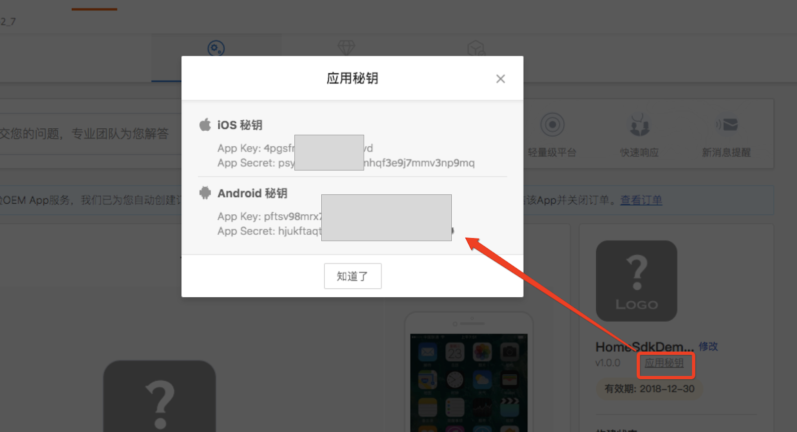

涂鸦全屋智能SDK提供了以家庭为单位，对硬件设备、涂鸦云通讯的接口封装，加速应用开发过程，主要包括了以下功能：
- 硬件设备相关（配网、控制、状态上报、定时任务、群组、固件升级、共享）
- 账户体系（手机号、邮箱的注册、登录、重置密码等通用的账户功能）
- 家庭管理
- ZigBee网关
- 消息中心
- 意见反馈
- 涂鸦云HTTP API接口封装 (参见涂鸦云api调用）
- SDK接口文档请参考：Tuya Smart Android SDK
获取App ID和App Secret
前往涂鸦iot平台https://iot.tuya.com。选择"创建App"，填写应用名称和包名，创建一款应用。

创建成功后。查看应用秘钥。获取应用的 App Key 和 App Secret.

在GitHub上下载TuyaHomeSdk的aar包
Step1. 引入aar包
在工程的app目录下的libs目录下导入下载的TuyaHomeSdk的aar包。

Step2. 配置build.gradle
在app目录下的build.gradle中添加如下配置
defaultConfig {
ndk {
abiFilters "armeabi-v7a", "x86"
}
}repositories {
flatDir {
dirs 'libs'
}
}dependencies {
implementation 'com.alibaba:fastjson:1.1.67.android'
implementation 'com.squareup.okhttp3:okhttp-urlconnection:3.6.0'
implementation 'io.reactivex.rxjava2:rxandroid:2.0.1'
implementation 'io.reactivex.rxjava2:rxjava:2.1.7'
implementation 'org.eclipse.paho:org.eclipse.paho.client.mqttv3:1.2.0'
implementation(name: 'tuyasmart-2.7.5', ext: 'aar')
}android {
lintOptions {
abortOnError false
disable 'InvalidPackage'
}
compileOptions {
sourceCompatibility JavaVersion.VERSION_1_7
targetCompatibility JavaVersion.VERSION_1_7
}
packagingOptions {
exclude 'META-INF/LICENSE.txt'
exclude 'META-INF/NOTICE'
exclude 'META-INF/LICENSE'
exclude 'META-INF/NOTICE.txt'
exclude 'META-INF/INDEX.LIST'
exclude 'META-INF/services/javax.annotation.processing.Processor'
}
}Step3. AndroidManifest.xml 设置
1. 在AndroidManifest.xml文件里的<application>下配置appkey和appSecret，
<meta-data
android:name="TUYA_SMART_APPKEY"
android:value="************" />
<meta-data
android:name="TUYA_SMART_SECRET"
android:value="***********" />2. 添加必要的权限支持
<!-- sdcard -->
<uses-permission android:name="android.permission.WRITE_EXTERNAL_STORAGE" />
<uses-permission android:name="android.permission.READ_EXTERNAL_STORAGE" />
<uses-permission android:name="android.permission.READ_PHONE_STATE" android:required="false"/>
<!-- 网络 -->
<uses-permission android:name="android.permission.INTERNET" />
<uses-permission android:name="android.permission.CHANGE_NETWORK_STATE" />
<uses-permission android:name="android.permission.CHANGE_WIFI_STATE" />
<uses-permission android:name="android.permission.ACCESS_NETWORK_STATE" />
<uses-permission android:name="android.permission.ACCESS_WIFI_STATE" />
<uses-permission android:name="android.permission.WAKE_LOCK"android:required="false" />
<!-- added from 2.7.2 -->
<uses-permission android:name="android.permission.CHANGE_WIFI_MULTICAST_STATE" android:required="false"/>3. 添加必要的service和receiver。在<application>下添加
<service
android:name="com.tuya.smart.mqtt.MqttService"
android:stopWithTask="true" />
<receiver android:name="com.tuya.smart.android.base.broadcast.NetworkBroadcastReceiver">
<intent-filter>
<action android:name="android.net.conn.CONNECTIVITY_CHANGE" />
</intent-filter>
</receiver>
<service
android:name="com.tuya.smart.android.hardware.service.GwBroadcastMonitorService"
android:exported="true"
android:label="UDPService"
android:process=":monitor">
<intent-filter>
<action android:name="tuya.intent.action.udp" />
<category android:name="tuya" />
</intent-filter>
</service>
<service
android:name="com.tuya.smart.android.hardware.service.DevTransferService"
android:label="TCPService">
<intent-filter>
<action android:name="tuya.intent.action.tcp" />
<category android:name="tuya" />
</intent-filter>
</service>Step4. 初始化涂鸦智能sdk
TuyaHomeSdk 是一切全屋智能API对外的接口，包含：配网、初始化、控制、房间、群组、ZigBee等一系列的操作。
Application中初始化涂鸦智能sdk
public class TuyaSmartApp extends Application {
@Override
public void onCreate() {
super.onCreate();
TuyaHomeSdk.init(this);
}
}Step5. 注销涂鸦智能云连接
在退出应用的时候调用以下接口注销掉。
TuyaHomeSdk.onDestroy();手机号码注册
手机验证码登录功能，需要先调用验证码发送接口，发送验证码。再调用手机验证码验证接口。将收到的验证码填入对应的参数中。
发送手机验证码
TuyaHomeSdk.getUserInstance().getEmailValidateCode(mCountryCode, mEmail, mIValidateCallback);private IValidateCallback mIValidateCallback = new IValidateCallback() {
@Override
public void onSuccess() {
mHandler.sendEmptyMessage(MSG_SEND_VALIDATE_CODE_SUCCESS);
}
@Override
public void onError(String s, String s1) {
getValidateCodeFail(s, s1);
}
};调用registerAccountWithPhone接口手机账号进行注册
TuyaHomeSdk.getUserInstance().registerAccountWithPhone(mCountryCode, mPhoneNum, mView.getPassword(), mView.getValidateCode(), mIRegisterCallback);手机密码登陆
使用手机号码和密码登陆。调用loginWithPhonePassword接口。
TuyaHomeSdk.getUserInstance().loginWithPhonePassword(mCountryCode, mPhoneNum, mView.getPassword(), mILoginCallback);在mILoginCallback 回调成功即可跳转到主页等操作。
private ILoginCallback mILoginCallback = new ILoginCallback() {
@Override
public void onSuccess(User user) {
loginSuccess();
}
public void onError(String errorCode, String errorMsg) {
Message msg = MessageUtil.getCallFailMessage(MSG_LOGIN_FAIL, errorCode, errorMsg);
mHandler.sendMessage(msg);
}
};手机验证码登陆
手机验证码登录功能，需要先调用验证码发送接口，发送验证码。再调用手机验证码验证接口。将收到的验证码填入对应的参数中。
获取验证码
TuyaHomeSdk.getUserInstance().getValidateCode(mPhoneCode, mView.getPhone(), new IValidateCallback() {
@Override
public void onSuccess() {
mHandler.sendEmptyMessage(MSG_SEND_VALIDATE_CODE_SUCCESS);
}
@Override
public void onError(String s, String s1) {
getValidateCodeFail(s, s1);
}
});手机验证码登陆
TuyaHomeSdk.getUserInstance().loginWithPhone(mPhoneCode, phoneNumber, code, new ILoginCallback() {
@Override
public void onSuccess(User user) {
mHandler.sendEmptyMessage(MSG_LOGIN_SUCCESS);
}
@Override
public void onError(String s, String s1) {
Message msg = MessageUtil.getCallFailMessage(MSG_LOGIN_ERROR, s, s1);
mHandler.sendMessage(msg);
}
});手机重置密码
获取验证码
TuyaHomeSdk.getUserInstance().getValidateCode(mCountryCode, mPhoneNum, mIValidateCallback);重置密码
TuyaHomeSdk.getUserInstance().resetPhonePassword(mCountryCode, mPhoneNum, mView.getValidateCode(), mView.getPassword(), mIResetPasswordCallback);用户邮箱密码注册
调用发送邮箱验证码
TuyaHomeSdk.getUserInstance().getRegisterEmailValidateCode(mCountryCode,mEmail,iResultCallback);调用邮箱注册接口
TuyaHomeSdk.getUserInstance().registerAccountWithEmail(mCountryCode, mEmail, mView.getPassword(), mView.getValidateCode(),mIRegisterCallback);用户邮箱密码登陆
TuyaHomeSdk.getUserInstance().loginWithEmail(mCountryCode, userName, password, mLoginCallback);用户邮箱重置密码
邮箱找回密码，获取验证码
TuyaHomeSdk.getUserInstance().getEmailValidateCode(mCountryCode, mEmail, mIValidateCallback);邮箱重置密码
TuyaHomeSdk.getUserInstance().resetEmailPassword(mCountryCode, mEmail, mView.getValidateCode(), mView.getPassword(), mIResetPasswordCallback);用户账号切换的时候需要调用退出登录接口
@Override
public void logout() {
TuyaHomeSdk.getUserInstance().logout(new ILogoutCallback() {
@Override
public void onSuccess() {
resultSuccess(WHAT_SETTING_LOGOUT_SUCCESS, true);
}
@Override
public void onError(String errorCode, String errorMsg) {
resultError(WHAT_SETTING_LOGOUT_ERROR, errorCode, errorMsg);
}
});
}
Session由于可能存在一些异常或者在一段时间不操作（45天）会失效掉，这时候需要退出应用，重新登陆获取Session。
TuyaSdk.setOnNeedLoginListener(new INeedLoginListener() {
@Override
public void onNeedLogin(Context context) {
Intent intent = new Intent(context, LoginActivity.class);
if (!(context instanceof Activity)) {
intent.addFlags(Intent.FLAG_ACTIVITY_NEW_TASK);
}
startActivity(intent);
}
});